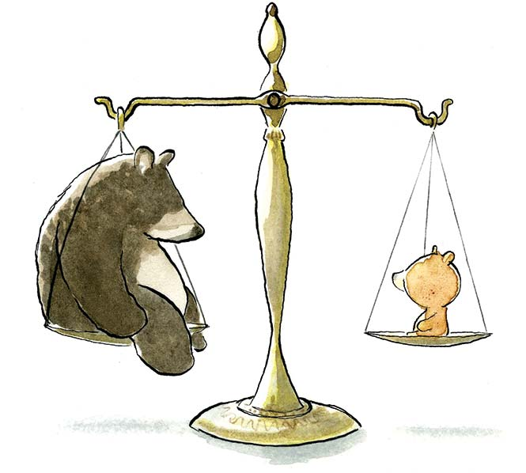
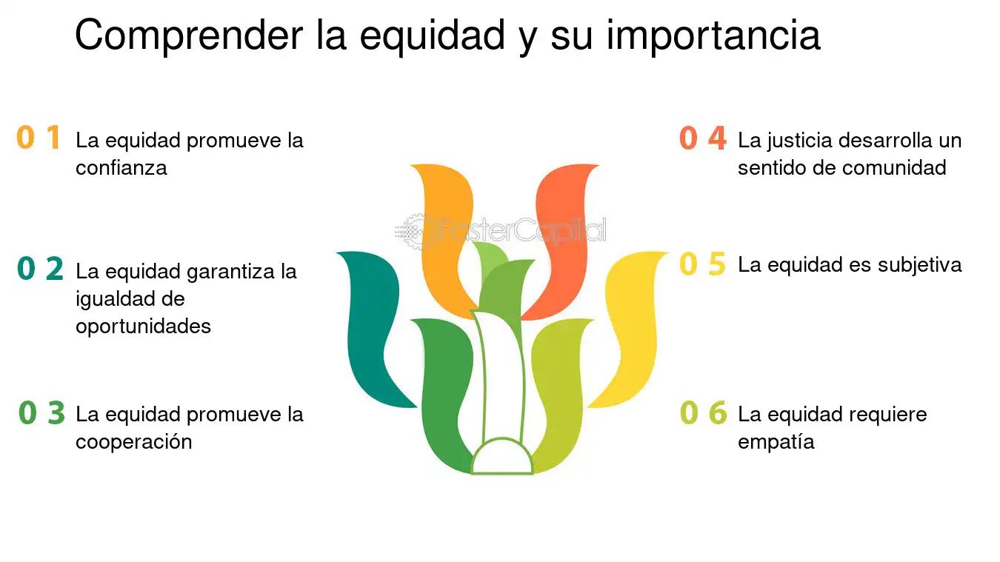
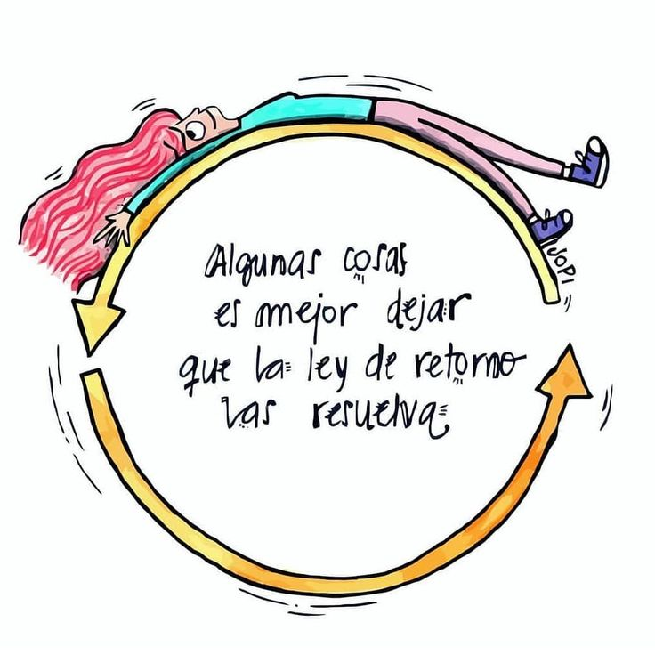
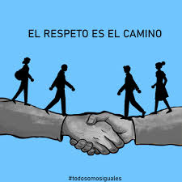

JUSTICIA
DEFINICION SEGUN LA RAE
1. f. Idea moral que inclina a dar a cada uno lo que le corresponde o pertenece. Lucharé toda mi vida por defender la justicia y la libertad. Solidaridad y justicia social son dos valores clásicos del socialismo.
2. f. Cualidad de justo o conforme con la justicia (→ 1). El alcalde es un hombre apreciado por su justicia y honradez. Nadie duda de la justicia de tal medida.
3. f. Aplicación de las leyes, castigando a quien las incumple. Los jueces y los tribunales se encargan de administrar justicia. Las víctimas piden justicia.
TEXTO BIBLICO
“No harás injusticia en el juicio; no favorecerás al pobre ni complacerás al rico, sino que con justicia juzgarás a tu prójimo” (Levítico 19:15)
PENSAMIENTO PARA REFLEXIONAR
"La justicia no consiste en dar a todos por igual, sino en dar a cada uno lo que le corresponde según sus necesidades y méritos. Solo cuando comprendemos las diferencias entre equidad e igualdad podemos construir una sociedad verdaderamente justa."
IMPARCIALIDAD
DEFINICION SEGUN LA RAE
1. adj. Que juzga o procede con rectitud, sin haber tomado partido previo por alguien o algo, y sin dejarse llevar por la propia inclinación. Los jueces deben ser imparciales.
2. adj. Propio de la persona imparcial (→ 1). Se ha hecho una valoración imparcial de todos los candidatos.
TEXTO BIBLICO
Colosenses 3:25 Porque el que procede con injusticia sufrirá las consecuencias del mal que ha cometido, y eso, sin acepción de personas.
PENSAMIENTO PARA REFLEXIONAR
"La imparcialidad es el espejo de la justicia, donde las emociones y los prejuicios se desvanecen, permitiendo que la verdad y la equidad prevalezcan. Ser imparcial no es solo abstenerse de tomar partido, sino también buscar siempre la verdad con los ojos del respeto y la razón."
EQUIDAD
DEFINICION SEGUN LA RAE
f. Cualidad de una persona que la hace juzgar o actuar con un sentido natural de lo que es justo. Elegirán a alguien para que medie en el conflicto con equidad.
TEXTO BIBLICO
1 Reyes 9:4: Y si tú anduvieres delante de mí como anduvo David tu padre, en integridad de corazón y en equidad, haciendo todas las cosas que yo te he mandado, y guardando mis estatutos y mis decretos,
PENSAMIENTO PARA REFLEXIONAR
"La equidad no se trata de dar a todos lo mismo, sino de asegurarse de que cada persona reciba lo que necesita para alcanzar su potencial. Es el arte de ver más allá de la igualdad y reconocer las diferencias que merecen ser atendidas para lograr verdadera justicia."
VERDAD
DEFINICION SEGUN LA RAE
1. f. Conformidad de lo que se expresa con lo que se cree, se conoce o se piensa. Nadie discute la verdad de tu afirmación.
2. f. Cosa dicha conforme a lo que se cree, se conoce o se piensa. Lo que te he dicho es verdad, puedes comprobarlo.
3. f. Cosa real o existente. Era verdad que estaba llorando. La verdad es que hace frío.
TEXTO BIBLICO
Juan 8:32: "Y conoceréis la verdad, y la verdad os hará libres."
PENSAMIENTO PARA REFLEXIONAR
"La verdad es un faro que ilumina incluso en medio de la oscuridad más densa. Buscarla y vivir conforme a ella no siempre es fácil, pero es el único camino que nos conduce a la paz interior y a la libertad genuina."
LEY DEL RETORNO
DEFINICION SEGUN LA RAE
m. Hecho de retornar. A su retorno, la ciudad había cambiado. El viaje de retorno lo hizo por otra ruta.
TEXTO BIBLICO
Gálatas 6:7: "No os engañéis; Dios no puede ser burlado: pues todo lo que el hombre sembrare, eso también segará."
PENSAMIENTO PARA REFLEXIONAR
"Lo que sembramos en la vida, ya sea bondad, amor o desconfianza, volverá a nosotros en formas que a veces no esperamos. Cultivemos con cuidado, pues cada acción es una semilla que florecerá en nuestro futuro."
RESPETO
DEFINICION SEGUN LA RAE
1. m. Sentimiento que se tiene hacia alguien o algo y que hace que se les trate con atención y cuidado, y que se les reconozca un mérito o valor especial. Sus canas inspiran respeto. Siente un gran respeto por las costumbres de su pueblo.
TEXTO BIBLICO
Mateo 22:21 Le respondieron: «Del César». Jesús les dijo: «Den al César lo que es del César, y a Dios, lo que es de Dios».
PENSAMIENTO PARA REFLEXIONAR
"El respeto es el fundamento de toda relación auténtica. Al reconocer y valorar la dignidad de cada persona, no solo honramos su humanidad, sino que también construimos puentes hacia la comprensión y la paz."
